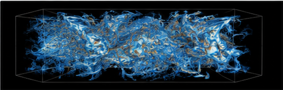

Open & Free
All datasets are open-access and free for academic and research use.
A curated collection of high-quality, open-access turbulence datasets for the scientific community.
All datasets are open-access and free for academic and research use.
Carefully curated and documented for reliability and reproducibility.
Covering a wide range of turbulence scales, flows, and methods.
Built for researchers, by researchers. Join us and contribute!
Our database is continuously growing. We aim to support reproducible research and accelerate discovery in turbulence.
View All Datasets